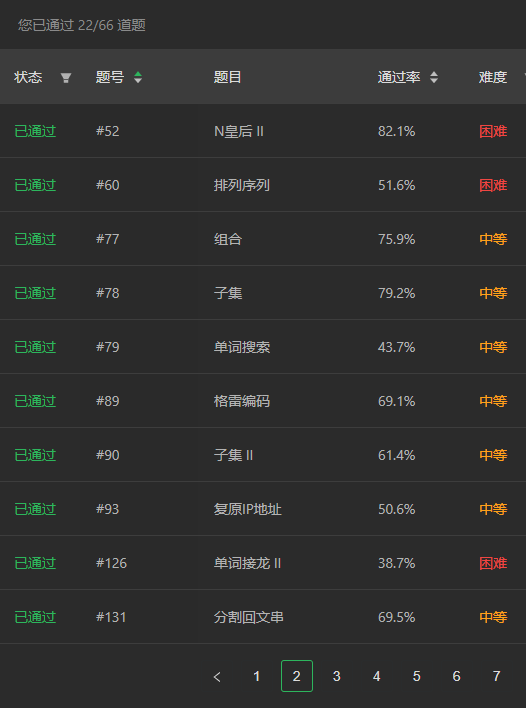

回溯算法是怎么回事呢，相信大家都听说过回溯算法，但是回溯算法的原理是什么呢，一般如何用代码实现呢？
回溯算法，就是将每条路都走一遍，当到达正确的结果时，停止或者继续尝试从而获得所有的正确结果
刷了Leetcode上20+道关于回溯算法的题之后，感觉自己对于回溯算法有了一点点(小声bb)认识，特此记录并加深自己的印象。

有图为证
回溯算法一般是通过递归的形式来实现的。回溯的方式，按照回溯的目的可以分为两类，两种类型的回溯略有差别，但是本质都一样。
- 第一类：找出一个合适的结果
- 第二类：找出所有合适的结果
了解回溯算法，首先需要找出进行遍历的决策树。想象自己位于一个起点，在你面前有很多个路口，每个路口往前走可能又会有多个路口，最后有一条路口对应的路的尽头有你想要的东西，你需要找到你的目标，所有路口组成的所有路径，就是一个决策树。于是，解决回溯类型的算法题，首先需要将决策树，也就是多个路口组成的路径树找出来。比如在分割字符串的时候，每个间隔可以选择分割或者不分割，这样就构成了一个每个点有两个路口的决策路径树。
在提取出了这一概念之后，可以开始编写回溯的递归函数。
对于第一类的回溯，递归函数的模板一般如下：
1
2
3
4
5
6
7
8
9
10
11
12
13
|
def backtrack(path, ...):
if 满足终止条件:
res = path
return True
result = False # result变量很关键，result为True说明已经找到了，从而不需要进行之后的尝试，使递归能够正确结束
for 选择 in 候选列表:
path.append(选择) # 做出选择
if backtrack(newpath, ...):
result = True
break
path.pop(选择) # 撤销这一次选择
return result
|
对于第二类的回溯问题，需要找出所有合适的路径，所以递归函数一般不返回值
1
2
3
4
5
6
7
8
9
|
def backtrack(path, ...):
if 满足终止条件:
if path not in res:
res.append(path)
for 选择 in 候选列表:
path.append(选择) # 做出选择
backtrack(newpath, ...):
path.pop(选择) # 撤销这一次选择
|
对于以上的函数模板，通常终止条件与path或者path之后的参数有关(比如字符串索引等)，而候选列表一般由path之后的参数决定。path记录的就是当前做出的所有选择，res中append的值也不一定是path，但是一般都可以由path这一变量得到。
回溯算法除了能够正确得到结果之外，有的时候为了解决超时这一问题，还需要对degwr选择进行过滤，或者采用更高级的方式进行剪枝。
最后，放一下自己独立完成的Leetcode 89题——格雷码的回溯算法代码。
1
2
3
4
5
6
7
8
9
10
11
12
13
14
15
16
17
18
19
20
21
22
23
24
25
26
27
28
29
30
31
32
33
34
35
36
37
|
from typing import List
class Solution:
def grayCode(self, n: int) -> List[int]:
'''
回溯算法
'''
visited = [0]
total = int(pow(2, n))
# 对于result变量的创建和赋值很关键，它影响了之后的执行流
def backtrack(num: int, count: int):
# 如果满足结束条件
if count == total:
return True
result = False
for i in range(n):
tmp = 0
if (num >> i) & 1:
tmp = num - pow(2, i)
else:
tmp = num + pow(2, i)
if tmp in visited:
continue
visited.append(tmp)
if backtrack(tmp, count+1):
result = True
break
visited.pop()
return result
backtrack(0, 1)
return visited
if __name__ == "__main__":
s = Solution()
print(s.grayCode(4))
|

{kind=link}